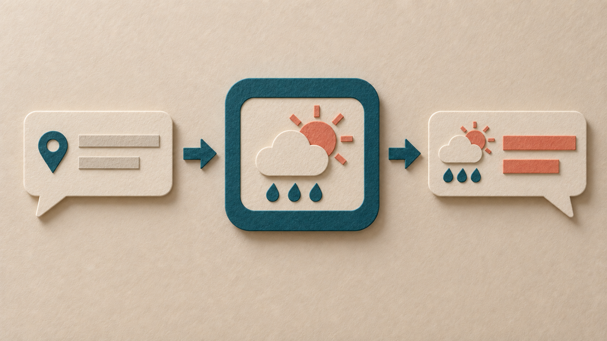

01 · 查资料，再组织回答

从资料中找到相关片段，再用于回答。
用户已选中的风格参考图 · AI 生成当前状态：用户接受此系列作为 Alpha 视觉基线。额外元素、布局漂移与跨模型稳定性仍有限制。
米白纸底、青绿主体、珊瑚色重点。用同一套纸雕语言，表达两种 AI 工作场景。
从资料中找到相关片段，再用于回答。
用户已选中的风格参考图 · AI 生成
例如，你问“成都明天出门要带伞吗？”AI 请求天气工具查询成都明天的预报，应用执行查询并返回数据，AI 再根据结果给出建议。
这里展示的是天气查询这一种工具调用。示例没有发起真实查询，图中的天气符号不代表成都的实际预报。
沿用第一张作为风格参考 · AI 生成 · Alpha 视觉基线计算器适合说明计算任务，但不能代表所有工具调用。
查看计算器候选图 · 原提示词这两张是概念配图，不包含完整的 RAG 或工具调用协议。尚未接入面试卡产品，学习效果未验证。
将 CLI 导出的 prompt_zh 原样传给内置 imagegen，一次生成，不附参考图。纸纹、层叠感与主配色延续，但新增地图、机器人图标，箭头与雨滴的配色也不同。它是一次实际输出，尚不证明跨主题或跨模型稳定性。
与上图的生成条件不同：上图使用英文提示词和参考图，因此这里只对照实际效果，不能单独归因于语言或参考图。
下载实际导出包当前效果获 Alpha 认可，不代表严格复现。未调用真实天气服务。
同一中文风格配方，仅替换主题，16:9、遵循风格配色、无参考图，一次生成。纸张纤维、层叠感与主配色延续，递书动作可辨；模型额外加入了柜台和植物，没有完全遵守“背景仅几本书”的要求。
这次支持纸雕媒介可以用于另一类主题的初步观察，但仍不能保证背景约束、跨模型或重复生成的一致性。当前效果获 Alpha 认可，不代表严格复现。
下载实际导出包